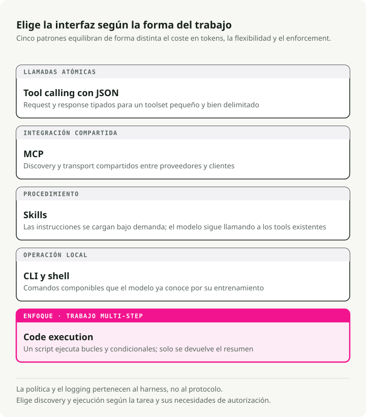
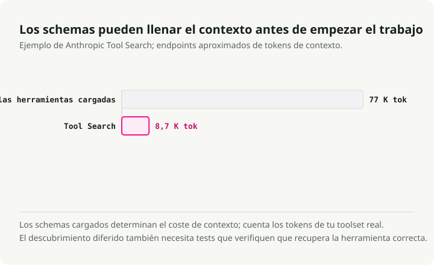
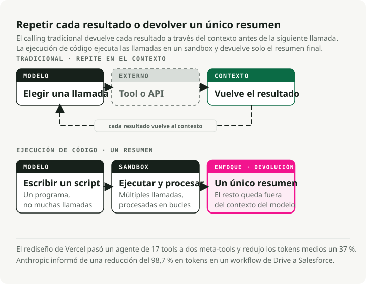
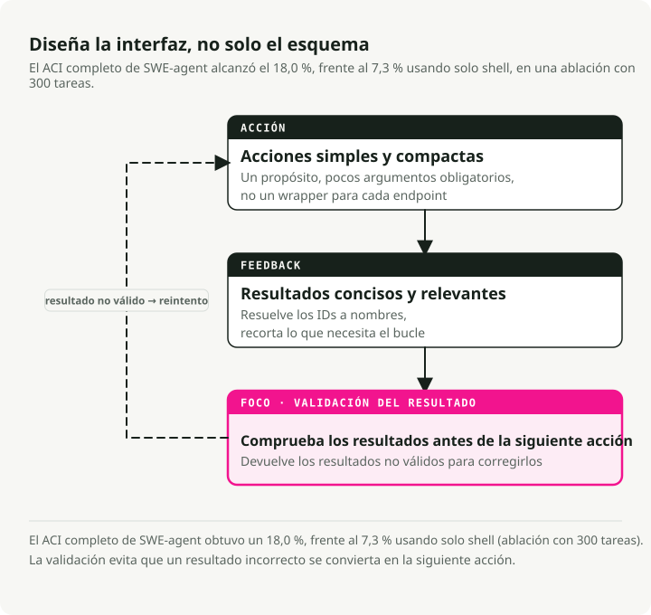

Traducción automática
Este artículo se tradujo automáticamente a partir de la versión original en inglés.
Uso de herramientas por agentes de IA en 2026: MCP, CLI, Skills y ejecución de código
Parte 3 de la serie Engineering the Agentic Stack
Parte 1 cubrió los bucles de razonamiento, Parte 2 cubrió la memoria. Esta entrada trata sobre el uso de herramientas por agentes de IA: cómo interactúan los agentes con el mundo y por qué el diseño de herramientas importa más de lo que la mayoría de equipos cree.
La historia del tooling cambió en 2025–2026. MCP se convirtió en el estándar de facto para servicios externos, pero los equipos de producción siguen topándose con sus lagunas de seguridad y su sobrecoste de tokens. El otro enfoque que está ganando adopción son los agentes que escriben y ejecutan código en vez de llamar a herramientas definidas en JSON. Anthropic midió una reducción del 98,7% en tokens en un flujo de trabajo representativo, y el paper CodeAct informa de tasas de éxito en tareas un 20% superiores.
Esta entrada compara llamadas a herramientas JSON, MCP, Skills, herramientas CLI y ejecución de código, y luego las relaciona con principios de diseño de Agent-Computer Interface (ACI) que aplico en el Market Analyst Agent.
Resumen: Existen cinco modalidades de herramientas para agentes de IA, cada una con su caso ideal. El stack práctico de 2026: Skills para conocimiento experto, CLI como opción por defecto, MCP para servicios externos y ejecución de código para orquestación de varios pasos. Los principios de diseño ACI de SWE-agent gobiernan todas ellas.
Cinco formas en que los agentes de IA usan herramientas
En la Parte 1, mostré cómo los bucles de razonamiento de los agentes de IA deciden cómo pensar. Las modalidades de herramientas deciden cómo actuar. Ahora existen cinco enfoques distintos, cada uno con trade-offs diferentes en coste en tokens, flexibilidad y seguridad.

1. Llamadas a herramientas JSON — La línea base
El patrón original: defines esquemas de herramientas como JSON, el LLM emite llamadas a funciones estructuradas y tu código las ejecuta. Se entiende bien y funciona correctamente para conjuntos pequeños de herramientas.
# Traditional tool definition — each tool consumes ~550-1,400 tokens (Apideck benchmark)
tools = [
{
"name": "get_stock_price",
"description": "Get the current stock price for a ticker symbol",
"input_schema": {
"type": "object",
"properties": {
"ticker": {"type": "string", "description": "Stock ticker (e.g., NVDA)"}
},
"required": ["ticker"]
}
}
]
Con 5-10 herramientas, esto está bien. El problema es la escala: cada definición de herramienta cuesta 550-1.400 tokens. Con 20 herramientas estás gastando 15-25K tokens antes de que el agente siquiera empiece a razonar.
2. MCP — El estándar universal (con matices)
El Model Context Protocol es el estándar en el que han convergido la mayoría de proveedores. Anthropic lo donó a la Linux Foundation bajo la Agentic AI Foundation (AAIF) en diciembre de 2025, cofundada con OpenAI y Block, y respaldada por Google, Microsoft y AWS como miembros platinum. OpenAI añadió soporte para MCP en su Responses API. Ahora hay más de 10.000 servidores MCP activos y más de 97M de descargas mensuales del SDK.
Donde MCP gana: integración SaaS cross-vendor (Figma, Notion, Salesforce), gobierno empresarial con trazas de auditoría, servicios sin equivalente CLI y entornos que necesitan orquestación OAuth. Para estos casos de uso, MCP es la opción clara.
La historia en producción es más desordenada de lo que sugieren las cifras de titulares.
La superficie de seguridad es el primer problema. El Vulnerable MCP Project rastrea 50 vulnerabilidades en servidores MCP, 13 clasificadas como Critical, aportadas por 32 investigadores de seguridad. Las clases de ataque abarcan prompt injection, fallos de validación de entrada, lagunas de autenticación y agujeros de seguridad de red. El primer servidor MCP malicioso en el mundo real apareció en septiembre de 2025: un paquete llamado postmark-mcp que añadía en copia oculta todas las salidas de correo a la dirección de un atacante, afectando a unas 300–500 organizaciones antes de ser descubierto.
El poisoning de herramientas es la clase de ataque que más me preocupa. Invariant Labs demostró que las herramientas MCP envenenadas pueden exfiltrar datos incluso cuando nunca se invocan. Basta con que el modelo lea los metadatos de la herramienta para disparar el ataque. Los benchmarks de MCPTox, que probaron 20 agentes LLM contra 45 servidores MCP reales, encontraron tasas de éxito del ataque de hasta 72,8%.
El sobrecoste en tokens es el problema operativo. Un equipo que ejecutaba servidores MCP para GitHub, Slack y Sentry (~40 herramientas en total) encontró 55.000 tokens de definiciones de esquemas inyectados antes de que un usuario preguntara nada. Otro informó de 143.000 de 200.000 tokens disponibles (72%) consumidos solo por las definiciones de herramientas.

Las mitigaciones funcionan, pero confirman el problema subyacente. La Tool Search Tool de Anthropic reduce el sobrecoste de esquemas en un 85%. La carga dinámica de herramientas (3-5 herramientas relevantes por tarea) logra una reducción del 96%. Son workarounds para un protocolo que no se diseñó pensando en presupuestos de tokens.
3. Skills (SKILL.md) — Conocimiento experto, no ejecución
A finales de 2025 llegó la estandarización de las agent skills como formato abierto (lanzado en octubre de 2025, publicado como estándar abierto en diciembre de 2025). La distinción importa: las herramientas aportan capacidades (lo que los agentes pueden hacer), y las skills aportan conocimiento experto (lo que los agentes saben sobre cómo completar tareas complejas).
El estándar SKILL.md define una skill como un archivo markdown con YAML frontmatter:
---
name: deploy
description: Deploy the application to production
argument-hint: "[environment]"
user-invocable: true
---
Deploy the application to the $0 environment (default: staging).
Steps:
1. Run the test suite
2. Build the production bundle
3. Deploy using the deploy script
4. Verify the deployment health check
Las skills usan divulgación progresiva: al arrancar solo se carga el metadato (~100 tokens para el YAML frontmatter), y las instrucciones completas se cargan cuando la skill se activa. Compáralo con MCP, donde ~40 herramientas en servicios típicos consumen ~55.000 tokens antes de que empiece cualquier razonamiento. La adopción multiplataforma a marzo de 2026 incluye Claude Code, OpenAI Codex CLI, Cursor, GitHub Copilot, Gemini CLI, Goose, Windsurf y Roo Code, una tendencia que Victor Dibia exploró en su análisis del cambio de herramientas a acciones de agentes guiadas por código.
Cuándo ganan las skills: transferencia de conocimiento experto de dominio, procedimientos complejos de varios pasos, flujos recurrentes como migraciones de bases de datos o integraciones de pagos, y cualquier tarea en la que el agente necesite saber cómo y no solo qué.
4. CLI/Bash — El renacimiento Unix
La terminal Unix resultó ser la interfaz para agentes más eficiente en tokens. Las cifras son claras: un manifiesto de herramienta CLI cuesta unos 100 tokens, mientras que los esquemas equivalentes de un servidor MCP consumen más de 50.000 tokens. Esa es una diferencia de 4-32x medida por Scalekit en 75 ejecuciones de benchmark (32x para tareas como detectar el lenguaje de un repo o consultar su licencia).
Los modelos son hablantes nativos de CLI. Sus datos de entrenamiento incluyen miles de millones de interacciones de terminal procedentes de Stack Overflow, repositorios de GitHub y documentación. Entienden de forma nativa git, docker, kubectl, gh, curl y jq sin necesidad de definiciones de esquemas.
La guía de Ugo Enyioha \"Writing CLI Tools That AI Agents Actually Want to Use\" codificó ocho reglas de diseño:
- La salida estructurada es obligatoria — soporta
--json - Los códigos de salida son flujo de control — usa códigos distintos para diferentes tipos de error
- Los comandos deben ser idempotentes
- Autodocumentado
--helpcon ejemplos realistas - Diseña para componibilidad —
--quietpara valores puros, soporte de stdin - Proporciona flags
--dry-runy--yes - Soporta introspección de versión
- Gestiona la autenticación mediante variables de entorno
Los trade-offs son reales. CLI carece de la seguridad de tipos de MCP, de la orquestación OAuth integrada, del descubrimiento de herramientas y de la traza de auditoría. El patrón al que veo converger a la mayoría de equipos: CLI como opción por defecto para desarrollo y operaciones locales, MCP para integración con servicios externos y gobierno empresarial.
5. Ejecución de código — El gran cambio
Este es el cambio en el tooling de agentes que considero más relevante. En lugar de que el LLM emita JSON estructurado para invocar funciones predefinidas una a una, el agente escribe un script completo en Python o bash que llama a varias herramientas, procesa resultados con bucles y condicionales, y devuelve al contexto del modelo solo los resúmenes finales.
Anthropic formalizó esto con Programmatic Tool Calling (PTC), ahora GA en la Claude API. La base académica es el paper CodeAct (Wang et al., ICML 2024), que probó 17 LLM y encontró que las acciones basadas en código lograban hasta un 20% más de éxito en tareas y un 30% menos de pasos que las alternativas JSON.

La evidencia en producción:
-
Vercel reconstruyó su agente d0 text-to-SQL eliminando el 80% de sus herramientas (de 15 a 2:
ExecuteCommandyExecuteSQL). El éxito en tareas pasó del 80% al 100%, el tiempo de ejecución cayó 3,5x y el uso de tokens bajó un 40%. Su formulación: \"The best agents might be the ones with the fewest tools.\" -
Cloudflare desarrolló \"Code Mode,\" permitiendo que los agentes escriban TypeScript para llamar a su API en lugar de definir esquemas de herramientas, lo que reduce el sobrecoste de contexto. Su razonamiento: \"LLMs have an enormous amount of real-world TypeScript in their training set, but only a small set of contrived examples of tool calls.\"
Aquí está el patrón de la documentación de PTC de Anthropic. La llamada tradicional a herramientas para análisis de gastos requiere más de 20 pasadas de inferencia separadas, una por miembro del equipo, con todos los datos intermedios fluyendo por el contexto. Un flujo que consumía ~150.000 tokens con llamada directa a herramientas se reimplementó con ~2.000 tokens, una reducción del 98,7%. Con ejecución de código, el agente escribe un único script:
# Agent generates this code, executes in sandbox
import json
members = get_team_members("engineering")
over_budget = []
for m in members:
expenses = get_expenses(m["id"], "Q3")
total = sum(e["amount"] for e in expenses)
if total > 5000:
custom = get_custom_budget(m["id"])
limit = custom["limit"] if custom else 5000
if total > limit:
over_budget.append({"name": m["name"], "spent": total, "limit": limit})
# Only this final summary returns to the LLM context
print(json.dumps(over_budget))
El LLM solo ve el resumen JSON final, no los miles de líneas de gastos procesadas en el sandbox. Mejoran a la vez la eficiencia en tokens, la componibilidad nativa (los bucles y condicionales vienen gratis), la gestión real de errores (try/except en vez de razonamiento en lenguaje natural sobre errores) y la privacidad (los datos sensibles permanecen en el sandbox).
Cuándo sigue teniendo sentido la llamada a herramientas JSON: operaciones atómicas individuales, entornos sin infraestructura de sandboxing, modelos pequeños con mala generación de código o requisitos de auditoría que necesitan registrar cada invocación individual de herramienta.
Tabla comparativa de llamadas a herramientas para agentes de IA
| Dimensión | Llamadas a herramientas JSON | MCP | Skills (SKILL.md) | CLI/Bash | Ejecución de código (PTC) |
|---|---|---|---|---|---|
| Mejor para | Acciones simples, individuales | SaaS cross-vendor | Conocimiento experto | Flujos de desarrollo, ops locales | Orquestación de varios pasos |
| Sobrecoste en tokens | Medio (esquemas por petición) | Muy alto (550-1.400/herramienta) | Muy bajo (~100 tokens) | Casi cero | Bajo (2 meta-herramientas) |
| Tasa de éxito en tareas | Línea base | Similar a la línea base | N/A (capa de conocimiento) | Mayor para tareas CLI-native | +20% frente a la línea base |
| Componibilidad | Baja (secuencial) | Baja (secuencial) | Alta (conocimiento procedural) | Alta (pipes, chaining) | Muy alta (código nativo) |
| Superficie de seguridad | Moderada | Alta (50+ CVEs) | Baja (basada en prompts) | Alta (acceso shell) | Alta (requiere sandboxing) |
| Complejidad de setup | Baja | Media (despliegue de servidor) | Muy baja (markdown) | Muy baja (CLI existentes) | Media (infra de sandbox) |
| Latencia por acción | 1 inferencia/llamada | 1 inferencia + transporte | 0 (inyección en contexto) | 1 inferencia/llamada | 1 pasada para N llamadas |
| Depuración | Buena (I/O estructurada) | Moderada (capa de transporte) | Buena (markdown legible) | Excelente (visible) | Buena (código legible) |
La componibilidad aquí significa lo fácil que resulta encadenar varias operaciones en un flujo de trabajo más amplio. Bajo significa que cada llamada a herramienta requiere un round-trip separado al LLM; alto significa que la modalidad soporta de forma nativa encadenar resultados (pipes de Unix, variables en código, pasos procedurales).
La Agent-Computer Interface (ACI) para herramientas de agentes de IA
El término \"Agent-Computer Interface\" (ACI) fue acuñado por John Yang, Carlos E. Jimenez y colegas de Princeton en su paper SWE-agent (NeurIPS 2024). La idea es directa: igual que los humanos se benefician de interfaces bien diseñadas (HCI), los agentes LM son \"a new category of end users with their own needs and abilities, and would benefit from specially-built interfaces.\"
Los resultados de ablación lo respaldaron. SWE-agent con su ACI completa logró 18,0% en SWE-bench Lite frente a 7,3% usando solo una shell Linux estándar, una mejora de 10,7 puntos porcentuales debida únicamente al diseño de interfaz. La barandilla de linting por sí sola aportó 3 puntos porcentuales: el 51,7% de las ediciones del agente tenía al menos un error detectado por el linter antes de poder propagarse.

Anthropic adoptó ACI como concepto fundacional en su guía \"Building Effective Agents\", listándola como uno de tres principios centrales: \"Carefully craft your agent-computer interface through thorough tool documentation and testing.\" Su orientación práctica: \"One rule of thumb is to think about how much effort goes into human-computer interfaces, and plan to invest just as much effort in creating good agent-computer interfaces.\"
Los cuatro principios en la práctica
1. Las acciones deben ser simples y fáciles de entender. El error más común es envolver endpoints de API uno a uno. En lugar de list_users, list_events, create_event, implementa schedule_event que encuentre disponibilidad y programe en una sola llamada. En lugar de read_logs, implementa search_logs que devuelva solo las líneas relevantes con contexto.
2. Las acciones deben ser compactas y eficientes. Consolida las operaciones importantes en el menor número posible de acciones. En el Market Analyst Agent, combino la obtención de precios con métricas básicas en una única herramienta get_stock_snapshot en lugar de exigir llamadas separadas para precio, volumen, capitalización y ratio PER.
3. El feedback del entorno debe ser informativo pero conciso. Evita devolver HTML bruto o payloads completos de API. Resuelve IDs crípticos a nombres semánticos. Las pruebas de Anthropic mostraron que añadir un enum response_format que permite a los agentes pedir respuestas concisas (~72 tokens) o detalladas (~206 tokens) —una diferencia de coste de 3x en tokens— mejoró de forma apreciable el rendimiento en el mundo real.
4. Las barandillas deben mitigar la propagación de errores. La detección automática de errores ayuda a los agentes a reconocer y corregir fallos rápidamente. En SWE-agent, un editor de archivos personalizado con linting integrado rechaza automáticamente los errores de sintaxis, detectando el 51,7% de los errores de edición del agente antes de que pudieran acumularse. Aplico el mismo principio en el Market Analyst Agent validando los argumentos de herramientas con esquemas Pydantic antes de la ejecución:
from pydantic import BaseModel, Field, field_validator
class StockQuery(BaseModel):
"""Validated input for stock queries.
Pydantic catches malformed tickers before the API call,
preventing error propagation through the reasoning loop.
"""
ticker: str = Field(description="Stock ticker symbol (e.g., NVDA)")
period: str = Field(default="1mo", description="Time period: 1d, 5d, 1mo, 3mo, 1y")
@field_validator("ticker")
@classmethod
def validate_ticker(cls, v: str) -> str:
v = v.upper().strip()
if not v.isalpha() or len(v) > 5:
raise ValueError(f"Invalid ticker format: {v}")
return v
@field_validator("period")
@classmethod
def validate_period(cls, v: str) -> str:
valid = {"1d", "5d", "1mo", "3mo", "6mo", "1y", "5y"}
if v not in valid:
raise ValueError(f"Invalid period: {v}. Must be one of {valid}")
return v
Patrones de diseño de herramientas para agentes de IA que funcionan
La guía \"Writing effective tools for agents\" de Anthropic plantea las herramientas como \"a new kind of software reflecting a contract between deterministic systems and non-deterministic agents.\" Estos son los patrones que se han consolidado a partir de la experiencia en producción.
Trata las descripciones de herramientas como prompt engineering
Las descripciones deberían tener un mínimo de 3-4+ frases, cubriendo cuándo usar la herramienta, parámetros obligatorios frente a opcionales, formato de salida y edge cases. El namespacing con prefijos (asana_search, jira_search) tiene \"non-trivial effects\" en la precisión de selección de herramientas. En los experimentos de Anthropic, las descripciones de herramientas optimizadas para Claude superaron a las escritas por expertos humanos en benchmarks de evaluación.
# Bad: vague, no context for when to use
tools = [{
"name": "search",
"description": "Search for items",
}]
# Good: specific, with input examples and edge cases
tools = [{
"name": "stock_search_news",
"description": (
"Search for recent news articles about a specific stock or company. "
"Use this tool when the user asks about recent events, earnings, "
"announcements, or market-moving news for a specific ticker. "
"Returns up to 10 articles sorted by relevance. "
"For broad market news (not ticker-specific), use market_overview instead."
),
"input_schema": {
"type": "object",
"properties": {
"query": {
"type": "string",
"description": "Search query. Examples: 'NVDA earnings Q3 2025', 'Tesla delivery numbers'"
},
"max_results": {
"type": "integer",
"description": "Max articles to return (1-10, default 5)",
"default": 5
}
},
"required": ["query"]
}
}]
Las pruebas internas mostraron que los ejemplos de entrada (campo input_examples) mejoraban sustancialmente la precisión en la gestión de parámetros complejos.
Devuelve salida de alta señal y legible por máquina
Evita identificadores de bajo nivel (uuid, mime_type). Resuelve IDs crípticos a nombres semánticos. Estructura la respuesta para que el agente pueda razonar sobre ella sin tener que parsear boilerplate:
# Bad: raw API response dumped to agent
def get_stock_price(ticker: str) -> dict:
response = api.get(f"/v1/quotes/{ticker}")
return response.json() # 500+ tokens of nested JSON
# Good: high-signal summary the agent can immediately reason about
def get_stock_price(ticker: str) -> dict:
data = api.get(f"/v1/quotes/{ticker}").json()
return {
"ticker": ticker,
"price": data["regularMarketPrice"],
"change_pct": round(data["regularMarketChangePercent"], 2),
"volume": data["regularMarketVolume"],
"market_cap_b": round(data["marketCap"] / 1e9, 1),
"pe_ratio": data.get("trailingPE"),
"summary": f"{ticker} at ${data['regularMarketPrice']:.2f} "
f"({'up' if data['regularMarketChangePercent'] > 0 else 'down'} "
f"{abs(data['regularMarketChangePercent']):.1f}%)"
}
Diseña la gestión de errores para resiliencia
El patrón que ha resistido en producción son cuatro capas de tolerancia a fallos:
- Reintento con exponential backoff para errores transitorios
- Cadenas de fallback de modelos para caídas de proveedor
- Enrutado por clasificación de errores — los errores transitorios se reintentan, los errores recuperables por LLM vuelven al agente con contexto, los errores que requieren intervención humana escalan
- Recuperación mediante checkpoints para sobrevivir a caídas
Los equipos informan de una bajada de fallos irrecuperables del 23% a menos del 2% con este enfoque de cuatro capas, como se documenta en los patrones de resiliencia de herramientas de Anthropic.
from tenacity import retry, stop_after_attempt, wait_exponential
@retry(
stop=stop_after_attempt(3),
wait=wait_exponential(multiplier=1, min=2, max=10),
)
def call_stock_api(ticker: str) -> dict:
"""Fetch stock data with automatic retry on transient failures.
Layer 1: Exponential backoff handles rate limits and network blips.
If all retries fail, the error propagates to the agent with
enough context to decide whether to try a different approach.
"""
response = httpx.get(
f"https://api.example.com/v1/quotes/{ticker}",
timeout=10.0,
)
response.raise_for_status()
return response.json()
Aplicando estos patrones: el Market Analyst Agent
Déjame mostrar cómo se combinan estos principios en el Market Analyst Agent de la Parte 1.
Consolidación de herramientas
El artículo de la Parte 1 muestra la superficie simplificada de 5 herramientas después de este refactor. Antes de esa limpieza, el diseño original tenía más de 10 herramientas: get_stock_price, get_company_metrics, get_market_cap, get_pe_ratio, get_volume, etc. Cada una era un wrapper fino sobre un endpoint de API. El agente tenía que razonar qué combinación llamar para cada petición.
Las consolidé en 5 herramientas de alto nivel, siguiendo el principio ACI de acciones compactas y eficientes:
| Antes (10+ herramientas) | Después (5 herramientas) | Por qué |
|---|---|---|
get_stock_price + get_company_metrics + get_pe_ratio |
get_stock_snapshot |
Una sola llamada devuelve todo lo necesario para análisis básico |
get_price_history + get_volume_history |
get_price_history |
Combinadas con periodo e indicadores configurables |
search_news + search_press_releases |
search_news |
Búsqueda unificada con filtrado por fuente |
search_competitors + get_sector_data |
search_competitors |
Devuelve competidores con métricas relativas |
get_financials + get_balance_sheet + get_cash_flow |
get_financials |
Unificadas con el parámetro statement_type |
Esto redujo sustancialmente el sobrecoste del esquema de herramientas y volvió más fiable la selección de herramientas del agente, porque hay menos elecciones ambiguas que tomar.
Salidas estructuradas para resultados de herramientas
Cada herramienta del Market Analyst Agent devuelve una respuesta validada con Pydantic. Esto aplica el principio de barandillas ACI en el límite de la herramienta:
class StockSnapshot(BaseModel):
"""Structured tool response — the agent never sees raw API noise."""
ticker: str
price: float
change_pct: float
volume: int
market_cap_b: float
pe_ratio: float | None
summary: str # Human-readable one-liner for direct use in reports
class NewsResult(BaseModel):
"""Each news item is pre-processed for agent consumption."""
headline: str
source: str
date: str
relevance_score: float # Pre-ranked so the agent doesn't waste tokens sorting
key_points: list[str] # Extracted by the tool, not the agent
El campo summary es el que más importa. Da al agente una cadena lista para usar que puede ir directamente a un informe sin procesamiento adicional. Los key_points de NewsResult se extraen del lado del servidor, evitando que el agente gaste tokens de inferencia parseando cuerpos de artículos.
Trade-offs y consideraciones
Más allá de los matices específicos de cada modalidad mencionados arriba, hay varias preocupaciones transversales que condicionan la elección:
-
El coste operativo varía según la dimensión. La ejecución de código ahorra tokens pero añade latencia de cold start del sandbox. MCP ahorra tiempo de desarrollo en integraciones SaaS pero añade sobrecoste de despliegue de servidores. CLI es gratis para empezar pero más difícil de gobernar a escala. Optimiza para tu cuello de botella real, ya sea coste en tokens, latencia o complejidad operativa.
-
Las capacidades del equipo importan. La ejecución de código asume que tus agentes (y los modelos detrás de ellos) pueden generar Python o TypeScript fiables. CLI asume familiaridad con las convenciones Unix. MCP requiere entender protocolos de transporte y flujos OAuth. Ajusta la modalidad a los puntos fuertes de tu equipo.
-
La consolidación de herramientas puede ir demasiado lejos. Si fusionas todo en una mega-herramienta, el espacio de parámetros se vuelve demasiado complejo para que el agente lo navegue. El punto dulce son 5-10 herramientas bien acotadas para la mayoría de sistemas de agentes.
-
Las skills están basadas en prompts, no se aplican por fuerza. Una skill son instrucciones que el agente debería seguir, no barandillas que deba seguir. Para flujos críticos, combina skills con validación determinista.
-
Los requisitos de auditoría condicionan la elección. Si necesitas un registro completo de cada invocación de herramienta y su resultado, MCP y la llamada a herramientas JSON proporcionan trazas de auditoría estructuradas out of the box. La ejecución de código produce un script y su salida, lo que es útil pero más difícil de descomponer en acciones individuales para reporting de compliance.
Hacia dónde va la ergonomía de herramientas
Hay tres direcciones que merece la pena seguir.
La primera es tool RAG para escalar. A medida que los conjuntos de herramientas crecen a cientos o miles, la precisión de selección ingenua de herramientas cae al 13,62%. El paper RAG-MCP mostró que aplicar retrieval-augmented generation a la selección de herramientas (indexando descripciones de herramientas en una base de datos vectorial y recuperando solo las herramientas relevantes por consulta) alcanza un 43,13% de precisión, una mejora de 3,2x, al tiempo que reduce los tokens del prompt en ~50%.
La segunda es que los agentes creen sus propias herramientas. El framework LATM (\"LLMs As Tool Makers\") estableció un paradigma de dos fases en el que un LLM potente crea funciones Python reutilizables y un LLM ligero las usa. ToolMaker (ACL 2025) transforma de forma autónoma repositorios de GitHub en herramientas compatibles con LLM con una tasa de éxito del 80%. La frontera se está moviendo del uso de herramientas a la creación de herramientas, y después a la gestión de bibliotecas de herramientas.
La tercera es el stack dual de protocolos A2A + MCP. El protocolo Agent2Agent (A2A) de Google aborda lo que MCP no puede: la comunicación agente a agente. MCP gestiona la integración agente-herramienta; A2A gestiona el descubrimiento, la negociación y la delegación de tareas entre agentes. La fórmula combinada: construye con tu framework, equipa con MCP, comunica con A2A.
Ideas clave
-
El uso de herramientas tiene cinco modalidades distintas, cada una con un caso ideal claro. No recurras a MCP por defecto para todo; ajusta la modalidad a la tarea.
-
La ejecución de código sustituyendo a la llamada a herramientas JSON es el mayor cambio en el tooling de agentes. El PTC de Anthropic, la reducción de herramientas de Vercel y el Code Mode de Cloudflare convergen en la misma idea: deja que los agentes escriban código en vez de llamar esquemas.
-
El sobrecoste en tokens es el cuello de botella operativo. Más de 55K tokens para ~40 herramientas MCP frente a ~100 tokens para manifiestos CLI no es una diferencia marginal. Es la diferencia entre que un agente tenga el 65% o el 95% de su contexto para razonar.
-
Los principios de diseño ACI importan más que el protocolo. SWE-agent mostró que solo el diseño de interfaz explicaba 10,7 puntos porcentuales en benchmarks. Acciones simples, feedback conciso y barandillas integradas aplican independientemente de si usas MCP, CLI o ejecución de código.
-
Consolida herramientas de forma agresiva. Cinco herramientas bien diseñadas superan a veinte granulares. Cada herramienta es una elección que estás obligando al modelo a hacer, así que reduce el espacio de decisión.
-
Trata las descripciones de herramientas como prompt engineering. Los ejemplos de entrada mejoran sustancialmente la precisión. Las descripciones optimizadas para Claude superan a las escritas por expertos humanos. Invierte el mismo esfuerzo en la UX de herramientas que invertirías en UX para humanos.
-
El stack práctico de 2026 es Skills + CLI + MCP + ejecución de código, por capas según el caso de uso. Skills para conocimiento experto, CLI para operaciones locales, MCP para servicios externos y ejecución de código para orquestación de varios pasos.
Qué viene después
En la Parte 4, Seguridad de agentes de IA en 2026, cubro la capa de políticas alrededor de los agentes: cómo prevenir acciones destructivas, llamadas a herramientas alucinadas y fugas de datos sensibles a través de respuestas de herramientas.
Referencias
Papers
- Executable Code Actions Elicit Better LLM Agents (CodeAct) — Wang et al., ICML 2024 — Las acciones basadas en código logran un 20% más de éxito en tareas que JSON
- SWE-agent: Agent-Computer Interfaces Enable Automated Software Engineering — Yang, Jimenez et al., NeurIPS 2024 — Principios de diseño ACI y evaluación en SWE-bench (18,0% frente a 7,3%, 10,7pp por diseño de interfaz)
- RAG-MCP: Mitigating Prompt Bloat in LLM Tool Selection — Tool RAG mejorando la precisión de selección de 13,62% a 43,13%
- LLMs As Tool Makers (LATM) — Cai et al., 2023 — Paradigma de dos fases para creación de herramientas por agentes
- ToolMaker: LLM Agents Making Agent Tools — Wolflein et al., ACL 2025 — Tasa de éxito del 80% transformando repos en herramientas
- MCPTox: A Comprehensive MCP Toxicity Benchmark — Tasa de éxito de ataque del 72,8% en 20 agentes LLM y 45 servidores MCP
Ingeniería de Anthropic
- Advanced Tool Use / Programmatic Tool Calling — Tool Search (85% de reducción de esquema), PTC y ejemplos de uso de herramientas
- Code Execution with MCP — Reducción del 98,7% en tokens (de 150K a 2K tokens) mediante orquestación de herramientas basada en código
- Writing Effective Tools for Agents — Ingeniería de descripciones de herramientas; los ejemplos de entrada mejoran la precisión; enum response_format (72 frente a 206 tokens)
- Building Effective Agents — ACI como principio fundacional de diseño
Casos de estudio de la industria
- Vercel: We Removed 80% of Our Agent's Tools — De 15 a 2 herramientas, del 80% al 100% de éxito, 3,5x más rápido, 40% menos tokens
- Cloudflare: Code Mode — Llamadas a API guiadas por TypeScript sustituyendo esquemas de herramientas
- Apideck: MCP Server Eating Your Context Window — 550-1.400 tokens/herramienta, 55K tokens para ~40 herramientas MCP, 143K/200K de contexto consumido
- Scalekit: MCP vs CLI Token Benchmark — Sobrecoste en tokens de 4-32x para MCP frente a CLI en 75 ejecuciones de benchmark
Seguridad
- Vulnerable MCP Project — 50 vulnerabilidades rastreadas, 13 Critical, de 32 investigadores
- AuthZed: Timeline of MCP Breaches — 9 incidentes graves de seguridad MCP (abril-octubre de 2025)
- Invariant Labs: MCP Tool Poisoning Attacks — Poisoning de herramientas, rug pulls y escalada cross-origin
- Pivot Point Security: MCP Security Analysis — 43% command injection, 43% fallos de autenticación OAuth
Diseño CLI
- Writing CLI Tools That AI Agents Actually Want to Use — Ugo Enyioha — Ocho reglas de diseño para CLI amigables para agentes
Proyecto demo
- Market Analyst Agent — Implementación completa con consolidación de herramientas y patrones ACI
El código completo de Market Analyst Agent, incluidos los diseños de herramientas descritos en esta entrada, está en GitHub.
Serie: Engineering the Agentic Stack
- Parte 1: Bucles de razonamiento de agentes de IA en 2026 — ReAct, ReWOO y Plan-and-Execute
- Parte 2: Arquitectura de memoria de agentes de IA en 2026 — checkpoints, vector stores y memoria documental
- Parte 3: Uso de herramientas por agentes de IA en 2026 (esta entrada)
- Parte 4: Seguridad de agentes de IA en 2026 — guardrails, permisos, sandboxes, HITL y scoping de MCP
- Parte 5: Runtime de agentes de IA de larga duración en 2026 — sesiones, sandboxes, checkpoints, harnesses y formas de despliegue